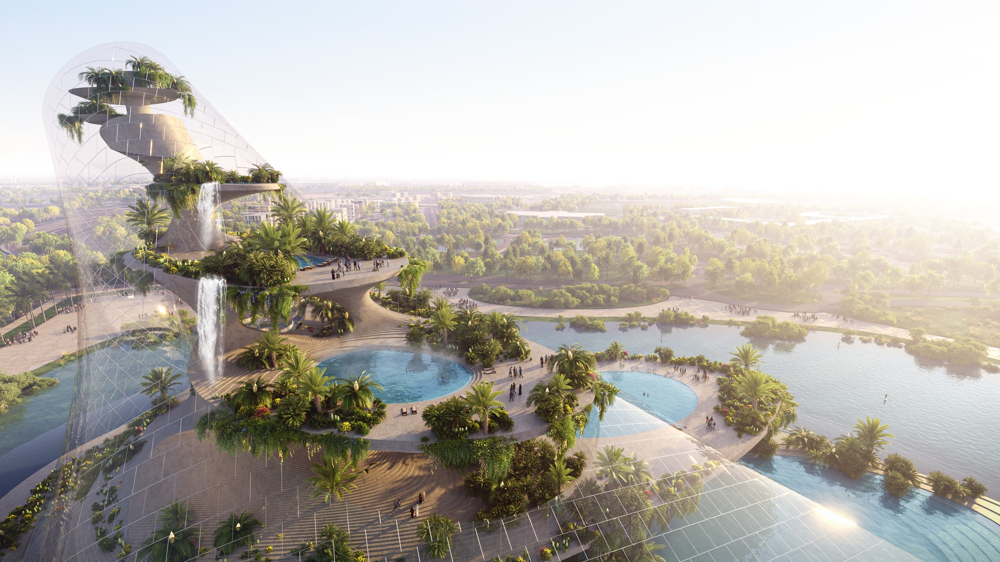
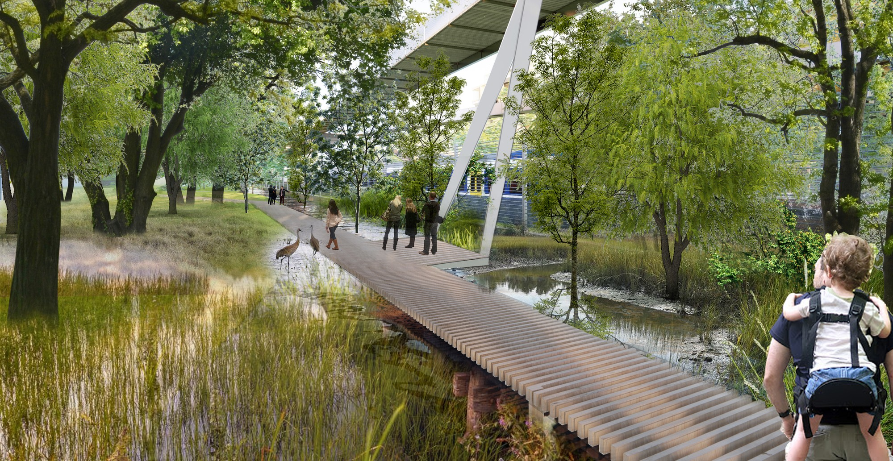
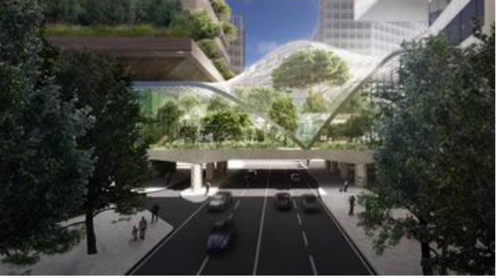
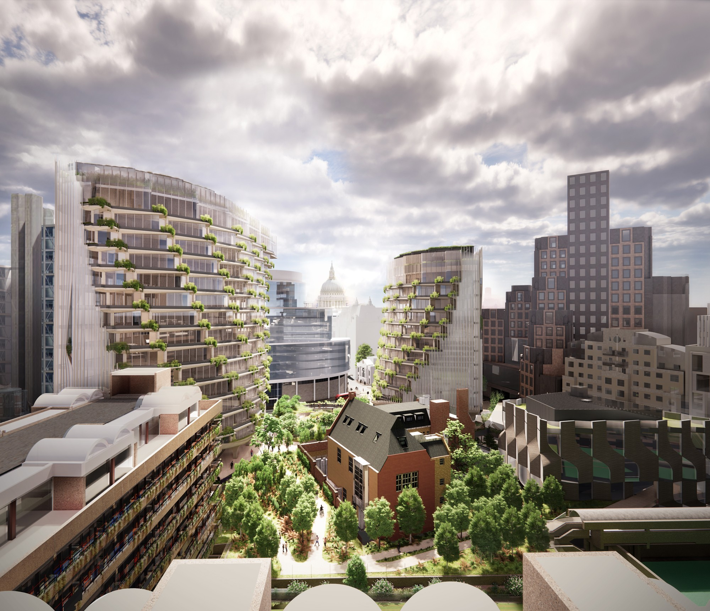
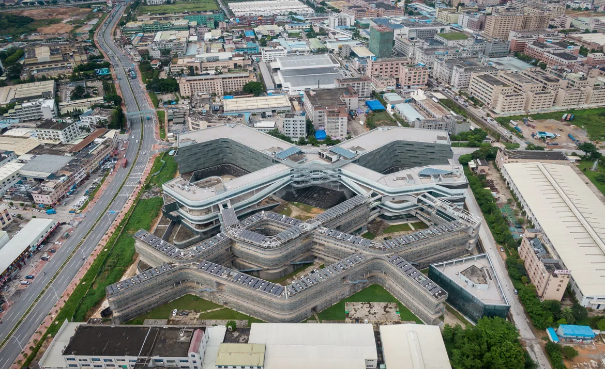
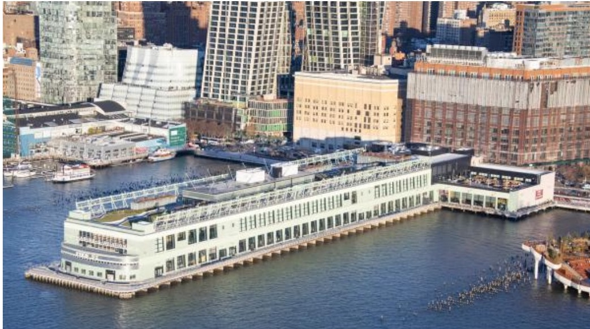
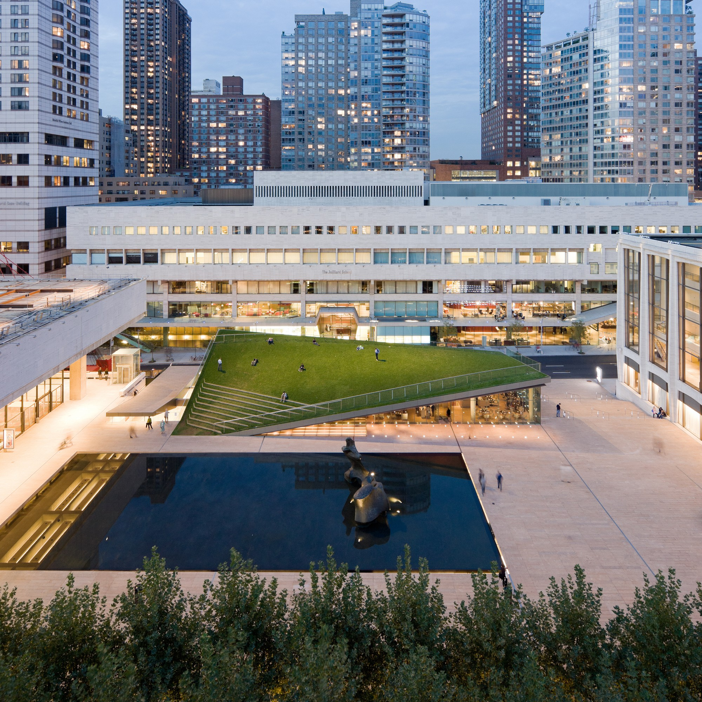

Upper Montparnasse, 2027
A renovation of a 16-story office tower above Gare Montparnasse in Paris, adding outdoor space, daylight and a rooftop urban farm.

A renovation of a 16-story office tower above Gare Montparnasse in Paris, adding outdoor space, daylight and a rooftop urban farm.

A New York restaurant inside the Seagram Building where video cameras and monitors let diners watch each other arrive.

A planned wellness destination in Dubai, built around water, nature and sustainable design.

A new district and public park in Rome, linking housing, offices and green space.

A small café on the Providence River in Rhode Island, designed as an open, welcoming place by the water.

A residential and mixed-use building in Milan, set in the city's historic Pirelli district.

A pedestrian bridge connecting two sides of a park, designed for walking and gathering.

The reuse and extension of an existing office complex in the City of London.

A building that combines apartments and workspaces under one roof.

A public park built on a former elevated railway in New York, with gardens, seating and city views.

An expansion and renovation of the Museum of Modern Art in New York, opening up galleries and public space.

A contemporary art museum in Los Angeles, wrapped in a porous, veil-like facade.

A public park beside the Kremlin in Moscow that blends landscape and architecture.

A public plaza in front of The Broad in Los Angeles, with trees and open seating.

A walkway and park along the waterfront that shifts with the rise and fall of the tide.

The transformation of a historic Hudson River pier in New York into offices and a public rooftop park.

A small pavilion for a hospital campus, offering a calm place to gather.

A renovation of the Lincoln Center campus in New York, with new buildings and public spaces.

A redesigned pedestrian bridge over 65th Street at Lincoln Center in New York.

A curved-roof pavilion and restaurant on the Lincoln Center campus in New York.

New plazas, lawns and gathering places across the Lincoln Center campus.
.jpg)
An outdoor installation of trees that invites visitors to sit and linger.

A pavilion made of fog above Lake Neuchâtel in Switzerland, built for the 2002 Swiss Expo.
No projects match your search.